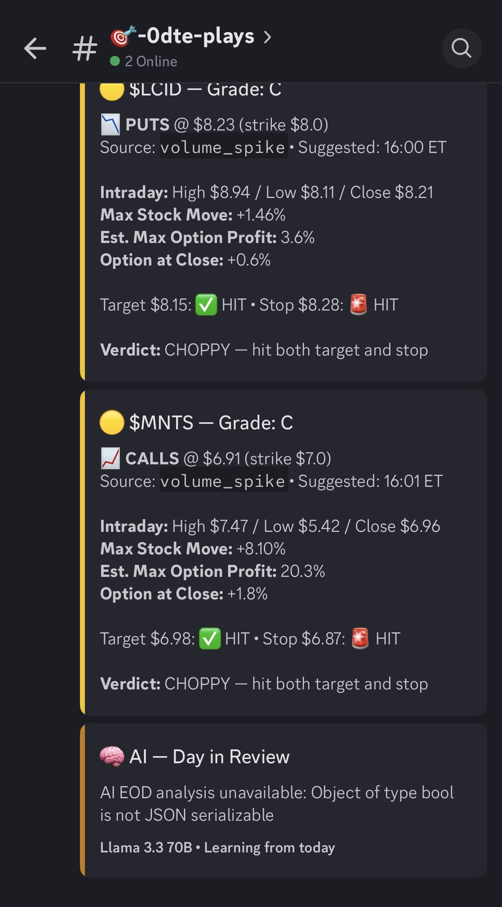
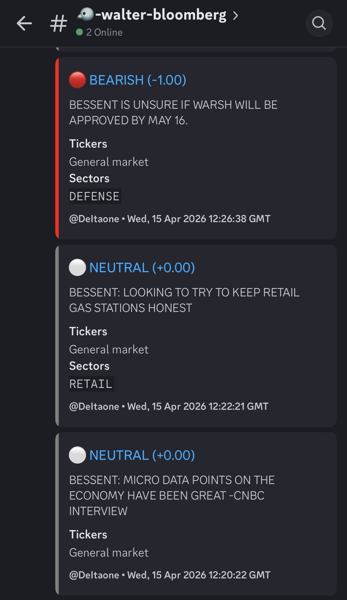

Hi, my name is
Data & AI professional with 5+ years building pipelines, models, and dashboards that drive real decisions. Currently leading data engineering and AI initiatives at Harris County Government.
I'm Dharaneesh, originally from a rural area near Erode, Tamil Nadu, India. My upbringing was shaped by my grandparents in the village and my godparents in Phoenix, Arizona — a blend of rural simplicity and exposure to technology that still defines how I approach problems: grounded, practical, and always building.
With 5+ years of experience, I work end-to-end across the data stack: writing ETL pipelines, training ML models, and putting AI-powered tools in the hands of stakeholders. Currently at Harris County Government, I lead data engineering, governance, and AI initiatives for the Housing & Community Development department.
I hold a Master's in Business Analytics from the University of Utah's David Eccles School of Business.
Years Experience
Records Engineered
Dashboards Shipped
Production Releases
Aug 2023 – Present · Houston, TX · Housing & Community Development, Executive Office
Aug 2022 – May 2023 · Salt Lake City, UT · Applied Health & Performance Science
2022 – 2023 · University of Utah
Dec 2019 – Dec 2021 · Mysore & Chennai, India · Risk & Finance
Autonomous market analysis system using Llama 3.3 70B. Real-time Finnhub WebSocket feeds, Walter Bloomberg sentiment via RSS, Discord bot scanning 74 tickers across 13 sectors.
Full-stack application for UCP's 50+ affiliates to analyze IRS Form 990 filings, replacing $150K+/year in vendor costs. Dual FastAPI microservices for IRS data ingestion and GPT-4-powered financial Q&A, with a React frontend visualizing multi-year revenue, expense, and asset trends.
Pipeline converting unstructured government PDFs into structured data at 90%+ accuracy using OCR, Hugging Face Transformers, and multi-LLM reasoning (GPT-4 + Perplexity).
Spark + AWS Glue pipelines for unstructured genomics and clinical literature at Rigor Health. Trained ML models via SageMaker. Reduced AWS costs by 25%.
Predicted new customer viability and 3-year revenue potential using Yelp business data and ensemble ML models. Delivered actionable forecasts and a Plotly-based decision dashboard to the regional sales team.
Predicted residential home prices using 79 features and an ensemble of glmnet, Random Forest, and XGBoost. Ranked top 3% of 5,000+ teams on Kaggle with an RMSLE of 0.12.
Analyzed 1M+ tweets to measure Super Bowl commercial effectiveness. Built NLP pipelines for real-time sentiment analysis and ROI measurement. Won 1st place out of 70 teams in the Utah Game Day Analytics Challenge.
Adaptive web app teaching English grammar using ID3 decision trees for personalized learning paths. Published research paper in NCCC20 conference (March 2020).
Inaugural recipient of Harris County HCD's monthly recognition; honored for technical contributions and community impact, 2025
Won the competition out of 70 teams; analyzed 1M+ tweets with Adobe Analytics, Alteryx, and Tableau, 2023
Recognized for cloud data engineering and scalable delivery; selected among 30+ global teams for regulatory risk data excellence, 2022
Contributed statistical analysis and data visualization to peer-reviewed publications including research on AAV-HSC gene editing and exome sequencing, alongside the Intelligent Tutor System (NCCC20, 2020)
University of Utah — David Eccles School of Business
Anna University — Dr. MCET, Pollachi, India

0DTE Options Plays — Grades, targets & verdicts

Walter Bloomberg — Real-time sentiment analysis